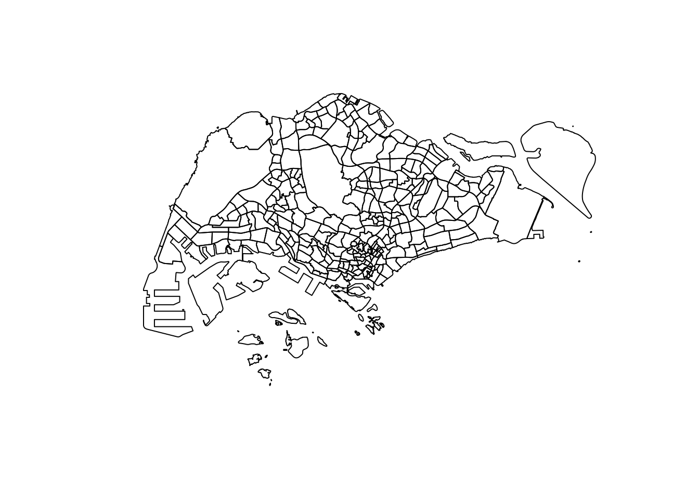
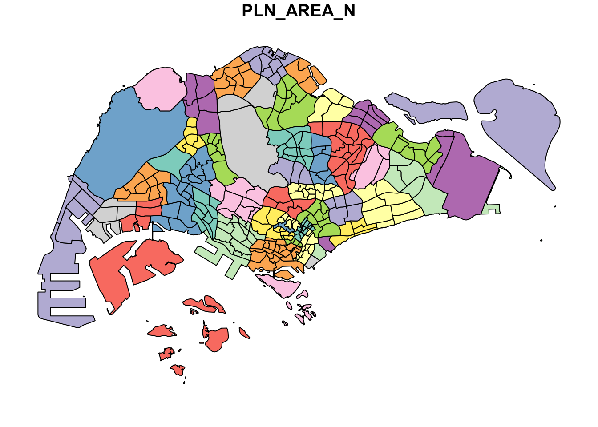
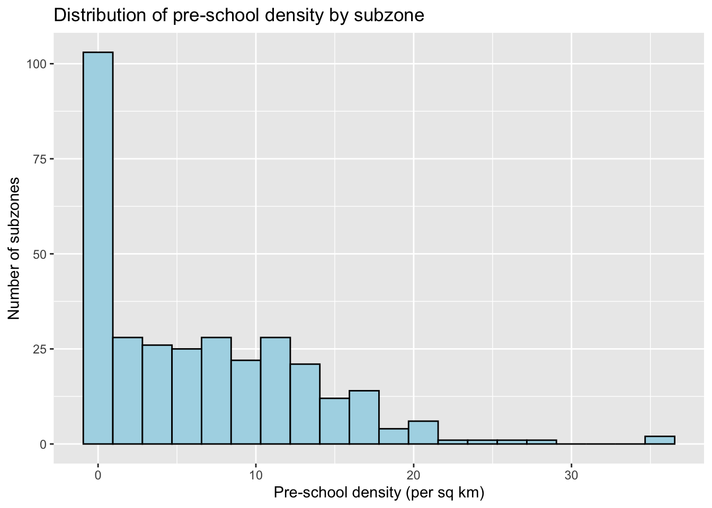
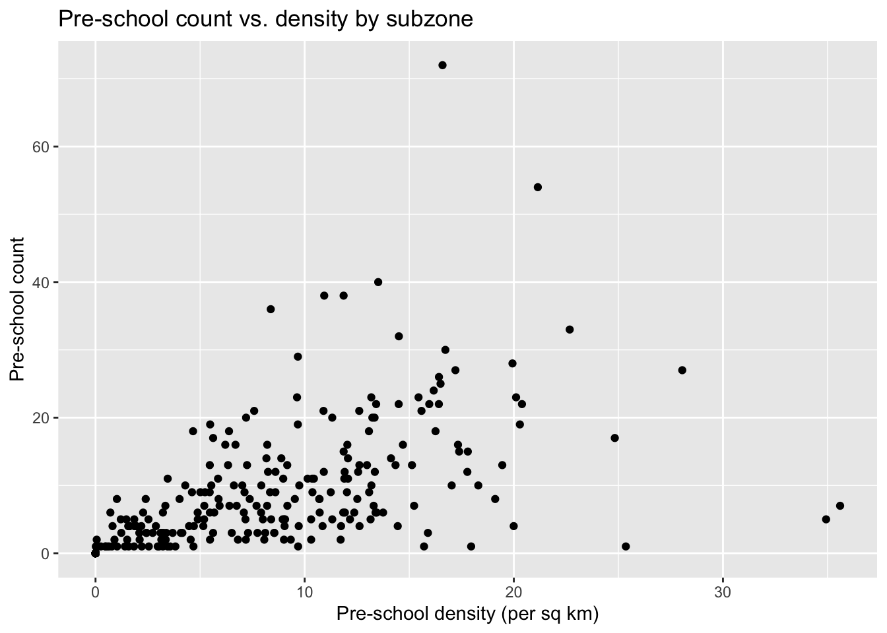

pacman::p_load(sf, tidyverse)Geospatial Data Wrangling with R
HANDS-ON EXERCISE 1 · PART 01
R sf tidyverse Geospatial Analysis
This exercise follows the first of two Hands-on Exercise 1 readings listed under Lesson 1 of the course outline: Geospatial Data Wrangling with R. The companion reading, Choropleth Mapping with R, is written up separately in Part 02.
1. Overview
This part works through the core geospatial data science workflow in R: importing geospatial and aspatial data, checking and setting coordinate reference systems, converting aspatial data to spatial data, and performing basic geoprocessing with the sf package.
2. Getting Started
3. Data Acquisition
Three datasets are used:
| Dataset | Source | Format used |
|---|---|---|
| Master Plan 2014 Subzone Boundary (No Sea) | data.gov.sg | GeoJSON |
| Pre-Schools Location | data.gov.sg | GeoJSON |
| Cycling Path Network | data.gov.sg | GeoJSON |
| Singapore Airbnb listings | Inside Airbnb | CSV |
Note on format: the original exercise reference uses the Master Plan boundary, pre-school location, and cycling path layers in Shapefile/KML format. All three have since been retired on the data.gov.sg portal in favour of GeoJSON-only downloads, so this write-up imports the GeoJSON versions directly with st_read() instead. The underlying sf workflow is identical regardless of source format — only the CRS each layer arrives in differs (all three come in as WGS84 here, rather than the mix of WGS84/SVY21 the reference chapter describes).
4. Importing Geospatial Data
4.1 Master Plan 2014 Subzone Boundary
mpsz <- st_read(dsn = "data/geospatial/MasterPlan2014SubzoneBoundaryNoSea.geojson")Reading layer `MP14_SUBZONE_NO_SEA_PL' from data source
`/Users/jedidiahasaf/Downloads/School/ISSS626/coursework-website/Hands-on_Ex/Hands-on_Ex01/data/geospatial/MasterPlan2014SubzoneBoundaryNoSea.geojson'
using driver `GeoJSON'
Simple feature collection with 323 features and 13 fields
Geometry type: MULTIPOLYGON
Dimension: XY
Bounding box: xmin: 103.6057 ymin: 1.158699 xmax: 104.0885 ymax: 1.470775
Geodetic CRS: WGS 844.2 Pre-Schools Location
preschool <- st_read("data/geospatial/PreSchoolsLocation.geojson")Reading layer `PreSchoolsLocation' from data source
`/Users/jedidiahasaf/Downloads/School/ISSS626/coursework-website/Hands-on_Ex/Hands-on_Ex01/data/geospatial/PreSchoolsLocation.geojson'
using driver `GeoJSON'
Simple feature collection with 2290 features and 2 fields
Geometry type: POINT
Dimension: XYZ
Bounding box: xmin: 103.6878 ymin: 1.247759 xmax: 103.9897 ymax: 1.462134
z_range: zmin: 0 zmax: 0
Geodetic CRS: WGS 844.3 Cycling Path Network
cyclingpath <- st_read("data/geospatial/CyclingPathNetwork.geojson")Reading layer `CYCLINGPATH' from data source
`/Users/jedidiahasaf/Downloads/School/ISSS626/coursework-website/Hands-on_Ex/Hands-on_Ex01/data/geospatial/CyclingPathNetwork.geojson'
using driver `GeoJSON'
Simple feature collection with 8523 features and 6 fields
Geometry type: MULTILINESTRING
Dimension: XY
Bounding box: xmin: 103.637 ymin: 1.265428 xmax: 103.9664 ymax: 1.467361
Geodetic CRS: WGS 845. Checking the Content of a Simple Feature Data Frame
st_geometry(mpsz)Geometry set for 323 features
Geometry type: MULTIPOLYGON
Dimension: XY
Bounding box: xmin: 103.6057 ymin: 1.158699 xmax: 104.0885 ymax: 1.470775
Geodetic CRS: WGS 84
First 5 geometries:glimpse(mpsz)Rows: 323
Columns: 14
$ OBJECTID_1 <int> 21, 22, 23, 24, 25, 26, 27, 28, 29, 30, 31, 32, 33, 34, 3~
$ SUBZONE_NO <int> 2, 2, 3, 4, 5, 4, 10, 12, 4, 6, 1, 1, 3, 8, 3, 7, 9, 2, 1~
$ SUBZONE_N <chr> "PEOPLE'S PARK", "BUKIT MERAH", "CHINATOWN", "PHILLIP", "~
$ SUBZONE_C <chr> "OTSZ02", "BMSZ02", "OTSZ03", "DTSZ04", "DTSZ05", "OTSZ04~
$ CA_IND <chr> "Y", "N", "Y", "Y", "Y", "Y", "N", "Y", "N", "Y", "Y", "Y~
$ PLN_AREA_N <chr> "OUTRAM", "BUKIT MERAH", "OUTRAM", "DOWNTOWN CORE", "DOWN~
$ PLN_AREA_C <chr> "OT", "BM", "OT", "DT", "DT", "OT", "BM", "DT", "BM", "DT~
$ REGION_N <chr> "CENTRAL REGION", "CENTRAL REGION", "CENTRAL REGION", "CE~
$ REGION_C <chr> "CR", "CR", "CR", "CR", "CR", "CR", "CR", "CR", "CR", "CR~
$ INC_CRC <chr> "B4120D23006C932A", "1C51019439A68700", "0FF1661344C84AED~
$ FMEL_UPD_D <chr> "20160511160621", "20160511160621", "20160511160621", "20~
$ SHAPE_1.AREA <dbl> 93140.44, 411722.82, 587222.68, 39437.94, 188767.49, 1330~
$ SHAPE_1.LEN <dbl> 1822.1927, 3074.9632, 4297.5999, 871.5549, 1872.7522, 160~
$ geometry <MULTIPOLYGON [arc_degree]> MULTIPOLYGON (((103.8432 1...., MUL~head(mpsz, n = 5)Simple feature collection with 5 features and 13 fields
Geometry type: MULTIPOLYGON
Dimension: XY
Bounding box: xmin: 103.8131 ymin: 1.274155 xmax: 103.8532 ymax: 1.286506
Geodetic CRS: WGS 84
OBJECTID_1 SUBZONE_NO SUBZONE_N SUBZONE_C CA_IND PLN_AREA_N PLN_AREA_C
1 21 2 PEOPLE'S PARK OTSZ02 Y OUTRAM OT
2 22 2 BUKIT MERAH BMSZ02 N BUKIT MERAH BM
3 23 3 CHINATOWN OTSZ03 Y OUTRAM OT
4 24 4 PHILLIP DTSZ04 Y DOWNTOWN CORE DT
5 25 5 RAFFLES PLACE DTSZ05 Y DOWNTOWN CORE DT
REGION_N REGION_C INC_CRC FMEL_UPD_D SHAPE_1.AREA
1 CENTRAL REGION CR B4120D23006C932A 20160511160621 93140.44
2 CENTRAL REGION CR 1C51019439A68700 20160511160621 411722.82
3 CENTRAL REGION CR 0FF1661344C84AED 20160511160621 587222.68
4 CENTRAL REGION CR 615D4EDDEF809F8E 20160511160621 39437.94
5 CENTRAL REGION CR 72107B11807074F4 20160511160621 188767.49
SHAPE_1.LEN geometry
1 1822.1927 MULTIPOLYGON (((103.8432 1....
2 3074.9632 MULTIPOLYGON (((103.8221 1....
3 4297.5999 MULTIPOLYGON (((103.8438 1....
4 871.5549 MULTIPOLYGON (((103.8496 1....
5 1872.7522 MULTIPOLYGON (((103.8525 1....6. Plotting the Geospatial Data
plot(st_geometry(mpsz))
plot(mpsz["PLN_AREA_N"])
7. Working with Projection
Checking the coordinate reference system of each layer:
st_crs(mpsz)Coordinate Reference System:
User input: WGS 84
wkt:
GEOGCRS["WGS 84",
DATUM["World Geodetic System 1984",
ELLIPSOID["WGS 84",6378137,298.257223563,
LENGTHUNIT["metre",1]]],
PRIMEM["Greenwich",0,
ANGLEUNIT["degree",0.0174532925199433]],
CS[ellipsoidal,2],
AXIS["geodetic latitude (Lat)",north,
ORDER[1],
ANGLEUNIT["degree",0.0174532925199433]],
AXIS["geodetic longitude (Lon)",east,
ORDER[2],
ANGLEUNIT["degree",0.0174532925199433]],
ID["EPSG",4326]]st_crs(preschool)Coordinate Reference System:
User input: WGS 84
wkt:
GEOGCRS["WGS 84",
DATUM["World Geodetic System 1984",
ELLIPSOID["WGS 84",6378137,298.257223563,
LENGTHUNIT["metre",1]]],
PRIMEM["Greenwich",0,
ANGLEUNIT["degree",0.0174532925199433]],
CS[ellipsoidal,2],
AXIS["geodetic latitude (Lat)",north,
ORDER[1],
ANGLEUNIT["degree",0.0174532925199433]],
AXIS["geodetic longitude (Lon)",east,
ORDER[2],
ANGLEUNIT["degree",0.0174532925199433]],
ID["EPSG",4326]]Both layers come in as WGS84 (EPSG:4326 / CRS84), Singapore’s projected coordinate system is SVY21 (EPSG:3414), which is needed for any accurate area or distance calculation. Transforming both layers:
mpsz3414 <- st_transform(mpsz, crs = 3414)
preschool3414 <- st_transform(preschool, crs = 3414)
cyclingpath3414 <- st_transform(cyclingpath, crs = 3414)st_crs(mpsz3414)Coordinate Reference System:
User input: EPSG:3414
wkt:
PROJCRS["SVY21 / Singapore TM",
BASEGEOGCRS["SVY21",
DATUM["SVY21",
ELLIPSOID["WGS 84",6378137,298.257223563,
LENGTHUNIT["metre",1]]],
PRIMEM["Greenwich",0,
ANGLEUNIT["degree",0.0174532925199433]],
ID["EPSG",4757]],
CONVERSION["Singapore Transverse Mercator",
METHOD["Transverse Mercator",
ID["EPSG",9807]],
PARAMETER["Latitude of natural origin",1.36666666666667,
ANGLEUNIT["degree",0.0174532925199433],
ID["EPSG",8801]],
PARAMETER["Longitude of natural origin",103.833333333333,
ANGLEUNIT["degree",0.0174532925199433],
ID["EPSG",8802]],
PARAMETER["Scale factor at natural origin",1,
SCALEUNIT["unity",1],
ID["EPSG",8805]],
PARAMETER["False easting",28001.642,
LENGTHUNIT["metre",1],
ID["EPSG",8806]],
PARAMETER["False northing",38744.572,
LENGTHUNIT["metre",1],
ID["EPSG",8807]]],
CS[Cartesian,2],
AXIS["northing (N)",north,
ORDER[1],
LENGTHUNIT["metre",1]],
AXIS["easting (E)",east,
ORDER[2],
LENGTHUNIT["metre",1]],
USAGE[
SCOPE["Cadastre, engineering survey, topographic mapping."],
AREA["Singapore - onshore and offshore."],
BBOX[1.13,103.59,1.47,104.07]],
ID["EPSG",3414]]8. Importing and Converting an Aspatial Data Set
The Airbnb listings CSV has latitude/longitude columns but no spatial geometry — it needs to be converted into an sf object before it can be used alongside the other two layers.
listings <- read_csv("data/aspatial/listings.csv")listings_sf <- st_as_sf(listings,
coords = c("longitude", "latitude"),
crs = 4326) %>%
st_transform(crs = 3414)listings_sfSimple feature collection with 3247 features and 17 fields
Geometry type: POINT
Dimension: XY
Bounding box: xmin: 5881.388 ymin: 22827.7 xmax: 44899.77 ymax: 48821.86
Projected CRS: SVY21 / Singapore TM
# A tibble: 3,247 x 18
id name host_id host_profile_id host_name neighbourhood_group
* <dbl> <chr> <dbl> <dbl> <chr> <chr>
1 71609 Ensuite Room (~ 3.67e5 1.46e18 Belinda East Region
2 71896 B&B Room 1 ne~ 3.67e5 1.46e18 Belinda East Region
3 71903 Room 2-near Ai~ 3.67e5 1.46e18 Belinda East Region
4 294281 5 mins walk fr~ 1.52e6 1.46e18 Elizbeth Central Region
5 344803 Budget short s~ 3.67e5 1.46e18 Belinda East Region
6 369141 5mins from New~ 1.52e6 1.46e18 Elizbeth Central Region
7 369145 5 mins walk fr~ 1.52e6 1.46e18 Elizbeth Central Region
8 4069756 DORMS - In the~ 1.75e7 1.46e18 Royal Central Region
9 4211375 Near NTU Amazi~ 1.23e7 1.46e18 Mia West Region
10 4271250 City Ctr_River~ 2.22e7 1.46e18 Yong Xing Central Region
# i 3,237 more rows
# i 12 more variables: neighbourhood <chr>, room_type <chr>, price <dbl>,
# minimum_nights <dbl>, number_of_reviews <dbl>, last_review <date>,
# reviews_per_month <dbl>, calculated_host_listings_count <dbl>,
# availability_365 <dbl>, number_of_reviews_ltm <dbl>, license <chr>,
# geometry <POINT [m]>9. Geoprocessing with sf Package
9.1 Buffer analysis: land needed to widen cycling paths
Scenario: the land authority wants to widen every cycling path by 5m on each side, and needs to know how much total land will need to be acquired.
buffer_cycling <- st_buffer(cyclingpath3414, dist = 5, nQuadSegs = 30)
buffer_cycling$AREA <- st_area(buffer_cycling)
sum(buffer_cycling$AREA)4989654 [m^2]9.2 Point-in-polygon count: pre-schools per subzone
mpsz3414$`PreSch Count` <- lengths(st_intersects(mpsz3414, preschool3414))summary(mpsz3414$`PreSch Count`) Min. 1st Qu. Median Mean 3rd Qu. Max.
0.00 0.00 4.00 7.09 10.00 72.00 9.3 Subzone area and pre-school density
mpsz3414$Area <- mpsz3414 %>%
st_area()
mpsz3414 <- mpsz3414 %>%
mutate(`PreSch Density` = as.numeric(`PreSch Count`) / (as.numeric(Area) / 1000000))ggplot(data = mpsz3414, aes(x = `PreSch Density`)) +
geom_histogram(bins = 20, color = "black", fill = "light blue") +
labs(title = "Distribution of pre-school density by subzone",
x = "Pre-school density (per sq km)",
y = "Number of subzones")
ggplot(data = mpsz3414, aes(y = `PreSch Count`, x = `PreSch Density`)) +
geom_point(color = "black", fill = "light blue") +
labs(title = "Pre-school count vs. density by subzone",
x = "Pre-school density (per sq km)",
y = "Pre-school count")
10. Reflections
The main friction point in this exercise wasn’t the sf workflow itself, it was that the reference chapter’s data sources have moved on: data.gov.sg no longer serves the Master Plan boundary, pre-school, or cycling path layers as Shapefile/KML, only GeoJSON. st_read() handles GeoJSON exactly the same way it handles a Shapefile or KML, so the substitution didn’t change anything downstream — the buffer, point-in- polygon, and density workflows all ran the same way once every layer was reprojected to EPSG:3414. The one thing worth double-checking whenever a dataset gets swapped like this is what coordinate system it actually arrives in — all three geospatial layers here came in as WGS84, whereas the reference chapter has some of them (the cycling path, in particular) already in SVY21.